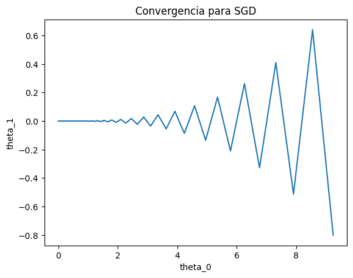
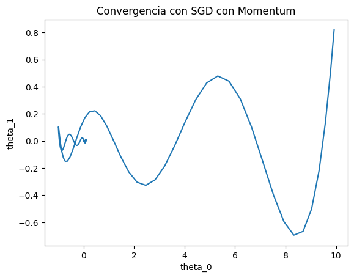
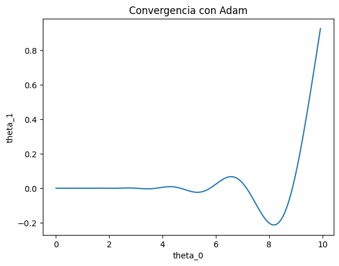
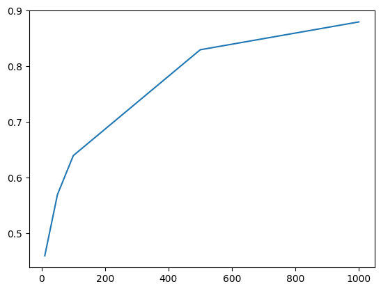
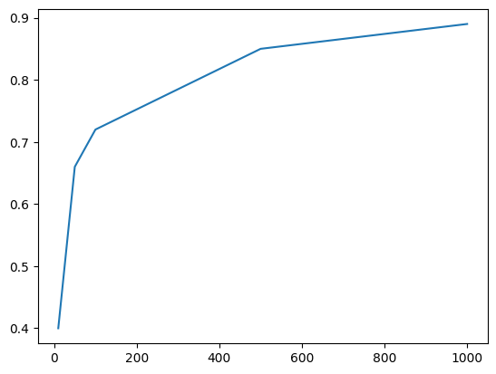

import torch
import torch.nn as nn
import torch.nn.functional as F
from sklearn.metrics import accuracy_score
import matplotlib.pyplot as plt
SEED = 10
torch.manual_seed(SEED)<torch._C.Generator at 0x7a9547f929f0>import torch
import torch.nn as nn
import torch.nn.functional as F
from sklearn.metrics import accuracy_score
import matplotlib.pyplot as plt
SEED = 10
torch.manual_seed(SEED)<torch._C.Generator at 0x7a9547f929f0>alpha = 0.075
theta = torch.tensor([10.0, 1.0], requires_grad=True)
def f(theta):
return 0.5 * theta[0] ** 2 + 12 * theta[1] ** 2
x = []
y = []
for e in range(500):
output = f(theta)
output.backward(retain_graph=True)
df = theta.grad.data
theta.data = theta.data - alpha * df
theta.grad.data.zero_()
x.append(theta.detach().numpy()[0])
y.append(theta.detach().numpy()[1])
plot_optimizers(x, y, title="Convergencia para SGD")
beta = 0.9
u = torch.tensor([0, 0])
theta = torch.tensor([10.0, 1.0], requires_grad=True)
x = []
y = []
for e in range(500):
output = f(theta)
output.backward(retain_graph=True)
df = theta.grad.data
u = beta * u + (1 - beta) * df
theta.data = theta.data - alpha * u
theta.grad.data.zero_()
x.append(theta.detach().numpy()[0])
y.append(theta.detach().numpy()[1])
plot_optimizers(x, y, title="Convergencia con SGD con Momentum")
beta_1 = 0.9
beta_2 = 0.999
v = torch.tensor([0, 0])
s = torch.tensor([0, 0])
theta = torch.tensor([10.0, 1.0], requires_grad=True)
x = []
y = []
for e in range(500):
output = f(theta)
output.backward(retain_graph=True)
df = theta.grad.data
v = beta_1 * v + (1 - beta_1) * df
s = beta_2 * s + (1 - beta_2) * df**2
v_p = v / (1 - beta_1 ** (e + 1))
s_p = s / (1 - beta_2 ** (e + 1))
theta.data = theta.data - alpha / s_p**0.5 * v_p
theta.grad.data.zero_()
x.append(theta.detach().numpy()[0])
y.append(theta.detach().numpy()[1])
plot_optimizers(x, y, title="Convergencia con Adam")
def forward(X, y, W1, W2):
h = torch.relu(X @ W1) @ W2
S = torch.softmax(h, dim=1)
I_y = F.one_hot(y)
return h, S, I_y
def dReLU(x):
return torch.where(x <= 0, 0, 1)
def dW2(X, W1, S, I_y):
return torch.relu(X @ W1).T @ (S - I_y)
def dW1(X, W1, W2, S, I_y):
return X.T @ (dReLU(X @ W1) * ((S - I_y) @ W2.T))X = torch.randn(100, 5)
y = torch.randint(3, (100,))
W1 = torch.randn(5, 32)
W2 = torch.randn(32, 3)
alpha = 0.1
EPOCHS = 1000
epoch_list = [10, 50, 100, 500, 1000]
def training_loop(X, y, W1, W2):
m = X.shape[0]
score = []
for e in range(1, EPOCHS + 1):
h, S, I_y = forward(X, y, W1, W2)
W1 -= alpha / m * dW1(X, W1, W2, S, I_y)
W2 -= alpha / m * dW2(X, W1, S, I_y)
if e in epoch_list:
h, _, _ = forward(X, y, W1, W2)
y_p = torch.argmax(h, dim=1).detach().numpy()
score.append(accuracy_score(y, y_p))
return W1, W2, score
W1_t, W2_t, score = training_loop(X, y, W1, W2)
plt.plot(epoch_list, score)
score
class MySimpleMLP(nn.Module):
def __init__(
self, n_features, hidden_dim=32, output_dim=3, bias=False
):
super().__init__()
self.w1 = nn.Linear(n_features, hidden_dim, bias=bias)
self.w2 = nn.Linear(hidden_dim, output_dim, bias=bias)
self.activation = nn.ReLU(inplace=True)
self.w1.weight.data = torch.randn(5, 32).T
self.w2.weight.data = torch.randn(32, 3).T
def forward(self, x):
x = self.w1(x)
x = self.activation(x)
x = self.w2(x)
return x
model = MySimpleMLP(n_features=5, bias=False)
criterion = nn.CrossEntropyLoss()
optimizer = torch.optim.SGD(model.parameters(), lr=alpha)def training_loop_pytorch(model, X, y, epochs=EPOCHS):
score = []
for e in range(1, epochs + 1):
model.train()
optimizer.zero_grad()
preds = model(X)
loss = criterion(preds, y)
loss.backward()
optimizer.step()
if e in epoch_list:
model.eval()
with torch.no_grad():
y_pred_pytorch = (
torch.argmax(model(X), dim=1).detach().numpy()
)
score.append(accuracy_score(y, y_pred_pytorch))
return model, score
model, score = training_loop_pytorch(model, X, y)
plt.plot(epoch_list, score)
score